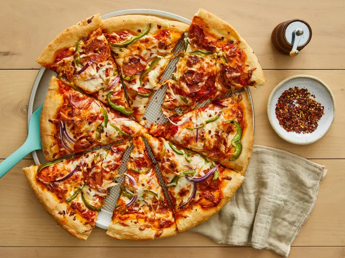

Lasagna

Ingredients
- 1 ½ cups warm water (110 degrees F/45 degrees C)
- 2 ¼ teaspoons active dry yeast
- ½ teaspoon brown sugar
- 2 tablespoons olive oil
- 1 teaspoon salt
- 3 ⅓ cups all-purpose flour, divided
Steps
- Stir together warm water, yeast, and brown sugar in a large mixing bowl; let sit for 10 minutes.
- Stir oil and salt into yeast mixture. Mix in 2 1/2 cups flour until incorporated. Turn dough out onto a clean, floured surface. Knead dough, adding remaining flour, a little at a time, until dough is no longer sticky. Place dough into an oiled bowl.
- Cover with a towel and let rise until doubled in size, about 1 hour.
- Punch down dough and form it into a tight ball. Allow dough to relax for 1 minute before rolling out.
- Preheat the oven to 425 degrees F (220 degrees C).
- If baking dough on a pizza stone, place toppings on dough and bake immediately. If baking dough on a pan, lightly oil the pan and let dough rise for 15 to 20 minutes before topping and baking it.
- Bake in the preheated oven until cheese is melted and crust is golden brown, 15 to 20 minutes.